Instructor: Professor Nien-Lin Hsueh (with Gemini AI) Department of Information Engineering and Computer Science Feng Chia University
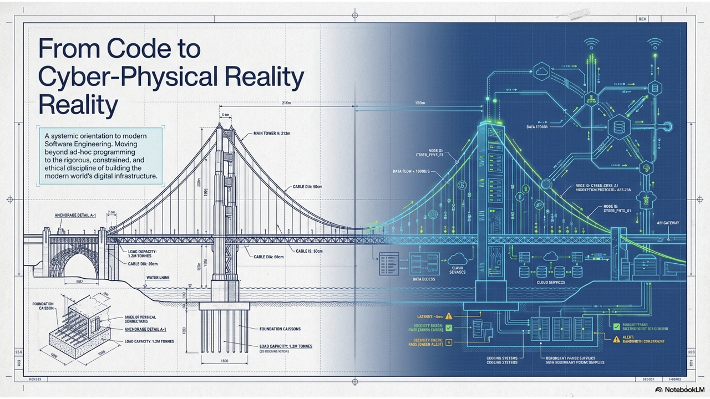
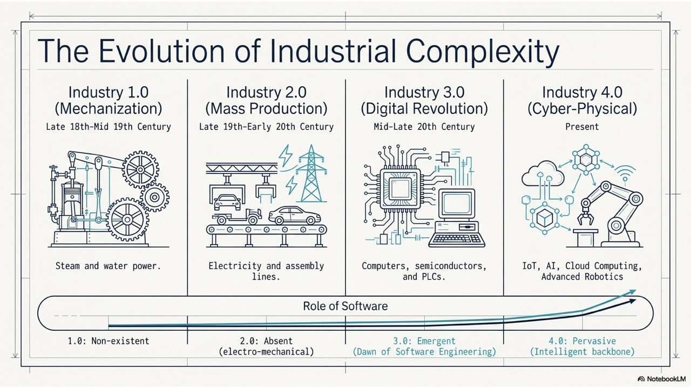
During which industrial revolution did software first emerge as a distinct discipline to control machines and manage data?
A. Industry 1.0 (Mechanization)
B. Industry 2.0 (Mass Production)
C. Industry 3.0 (Digital & Software Automation)
D. Industry 4.0 (Connectivity, AI, & Robotics)
Early Computing (1940s-1950s):
The Software Crisis (1960s-1970s):
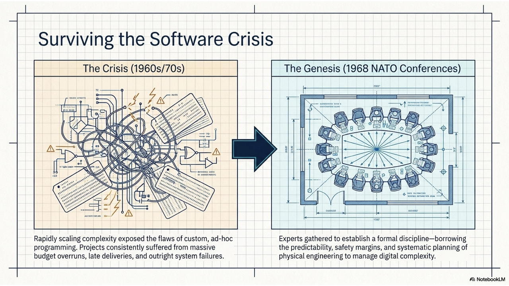
Formalization and Conferences (Late 1960s - 1970s):
Establishment as a Discipline (1980s onwards):
What software failure event are you familiar with? And what did you learn from it?
Difficulties of Early Plan-Driven SE:
The Agile Solution:
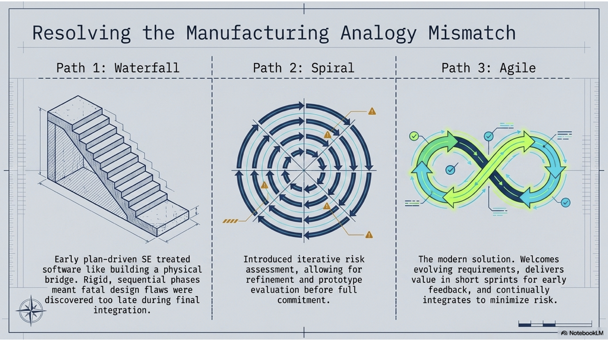
IEEE Definition: Computer programs, procedures, and possibly associated documentation and data pertaining to the operation of a computer system.
Programs must be written for people to read, and only incidentally for machines to execute. — Abelson & Sussman
True or False?
According to the IEEE definition, "software" refers solely to the executable computer programs (source code) and does not include operational procedures or documentation.
A. True
B. False
According to the IEEE definition, which of the following is NOT considered an essential component of "software"?
A. Computer programs (source code)
B. Computer hardware and physical memory circuits
C. Operating and execution procedures
D. Associated documentation and system data
What makes a software system "good"? Consider these definitions:
Conformance to Requirements (Crosby, 1979):
The degree to which a system, component, or process meets specified requirements.
Fit for Purpose (Juran, 1998):
The degree to which a system, component, or process meets customer or user needs or expectations.
Conformance to explicitly stated functional and performance requirements, explicitly documented development standards, and implicit characteristics expected of all professionally developed software.
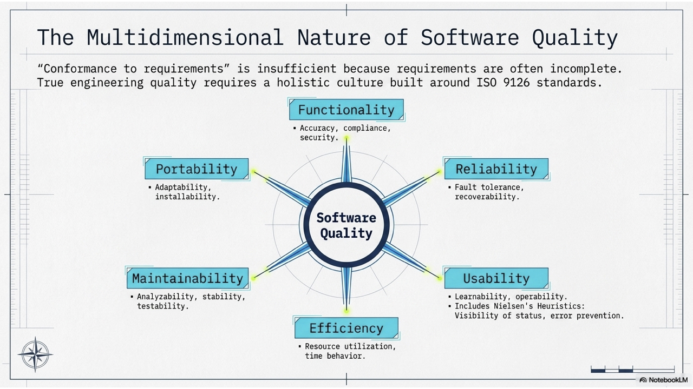
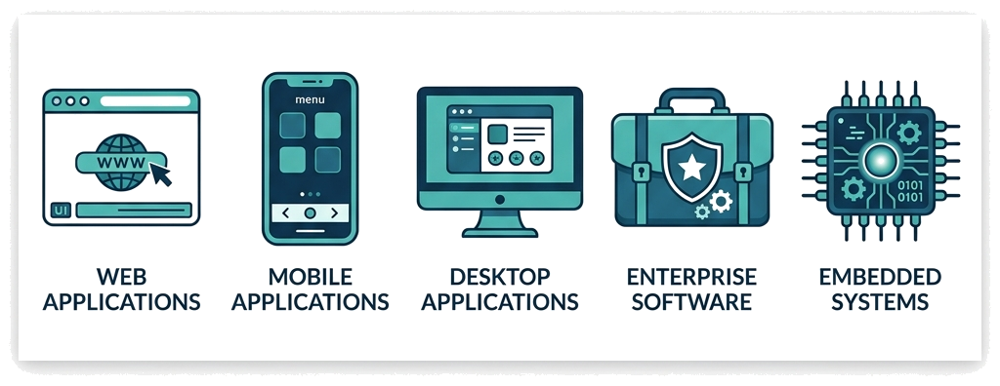
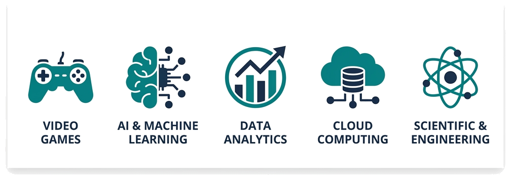
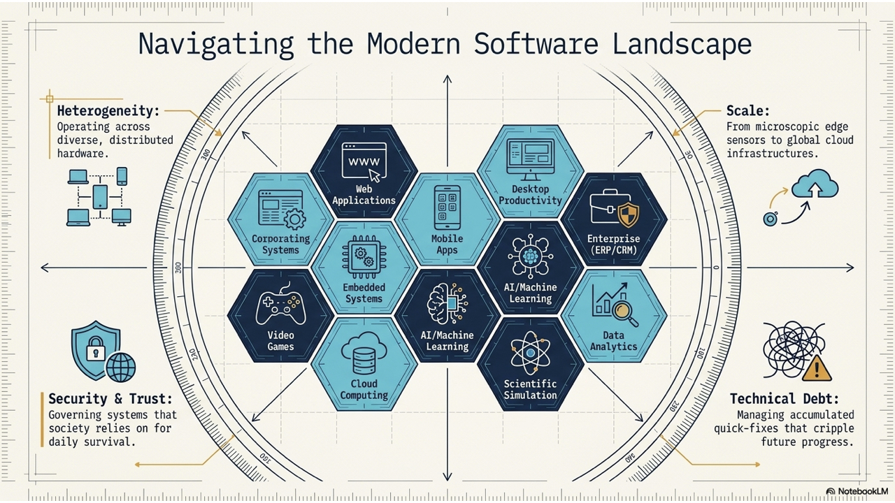
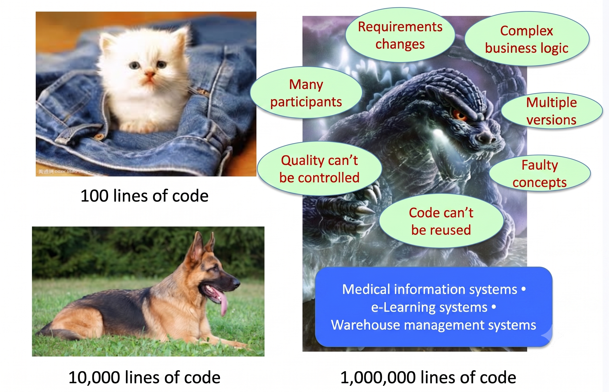
Engineering is the application of scientific, economic, and practical knowledge to design and build structures, machines, devices, and systems.
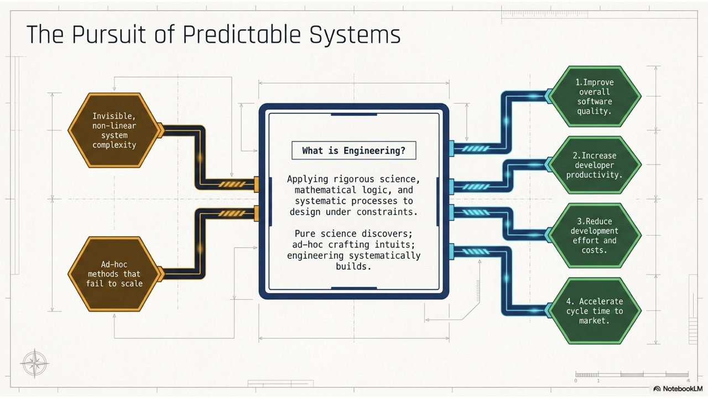
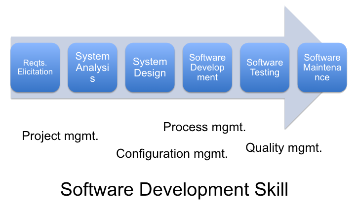
Professional engineering requires discipline:
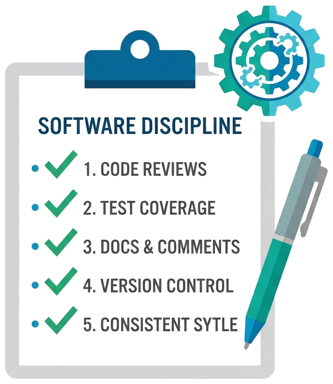
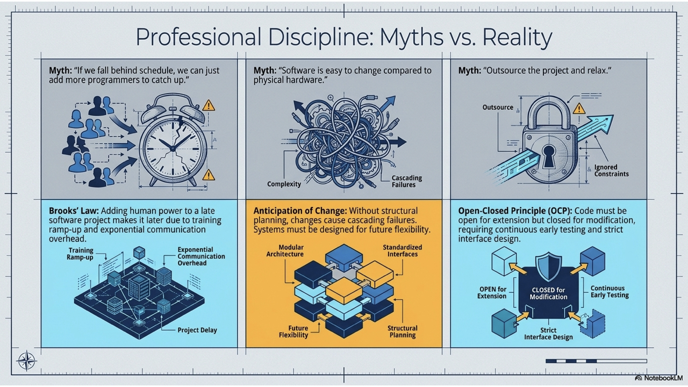
If a software project falls behind schedule, adding more programmers to the team will help us catch up and meet the deadline.
Based on your own experience, develop a software development principle or myth, or share one you strongly agree with and explain why.
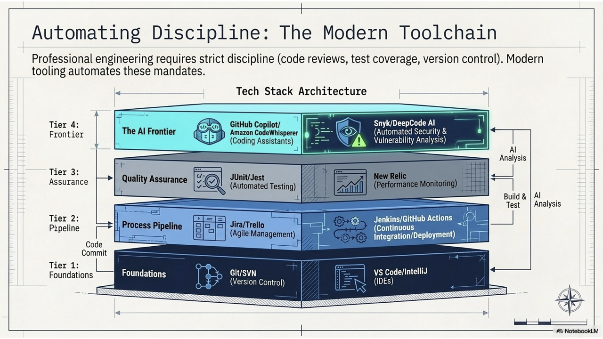
Write down the software development tool that you find most useful, particularly one that others might commonly overlook.
To deliver a successful project, engineers must balance constraints with available resources.
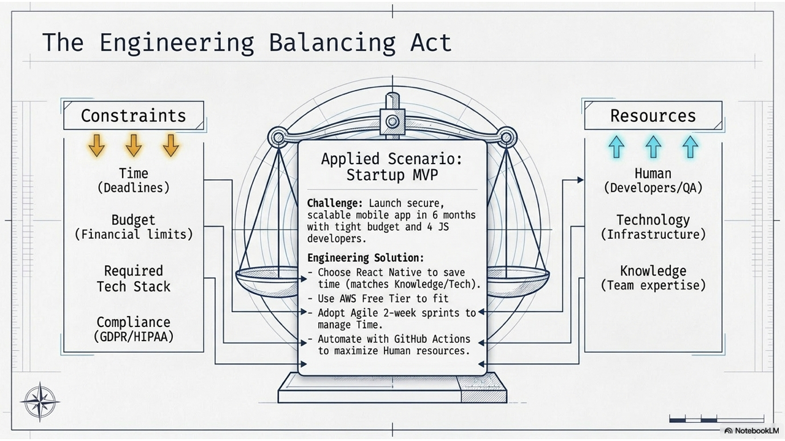
ACM/IEEE outline 6 primary ethical pillars for software engineers:
According to the ACM/IEEE Software Engineering Code of Ethics, what is the highest priority that software engineers must always uphold?
A. The financial interests of the Client and Employer
B. The technical complexity of the Product
C. The Public Interest (safety, health, and welfare)
D. The professional development of their team
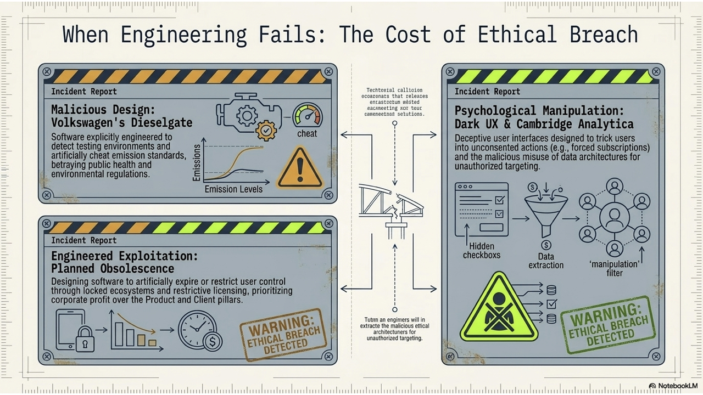
The digital town became more real and full of wisdom, because everyone understood that true power lay in their own judgment, not in being quietly guided by others.
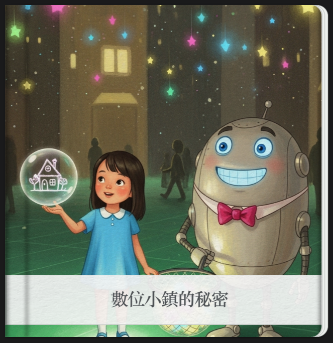
Provide examples of Dark UX Patterns, preferably ones you have personally encountered.
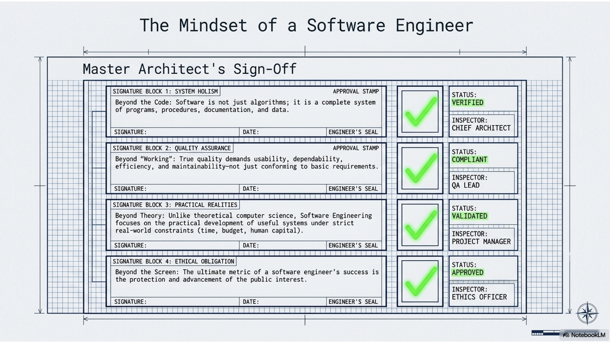
Test your understanding of the core concepts in this chapter: